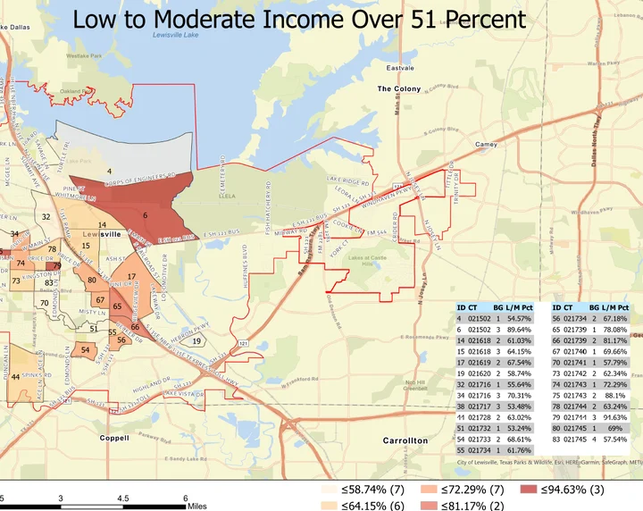
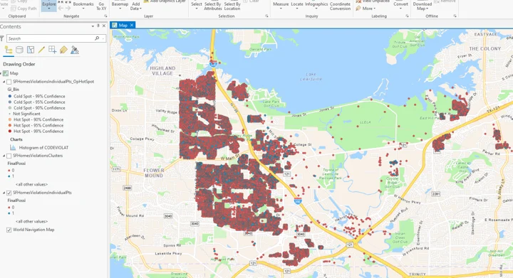
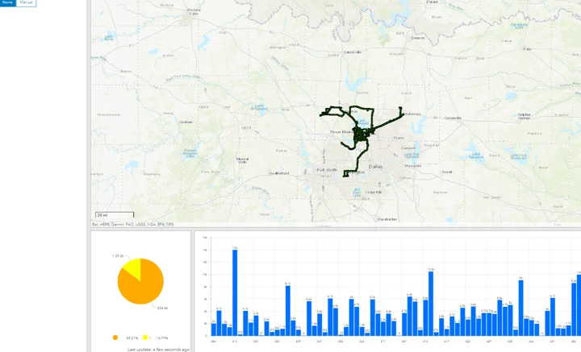
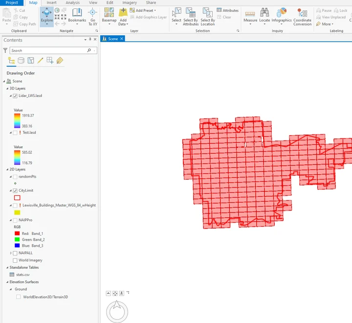
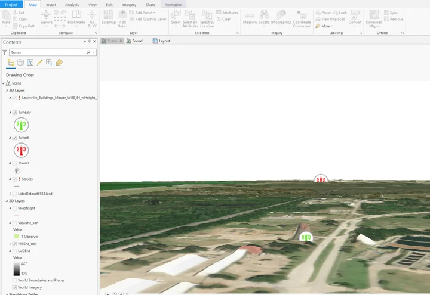
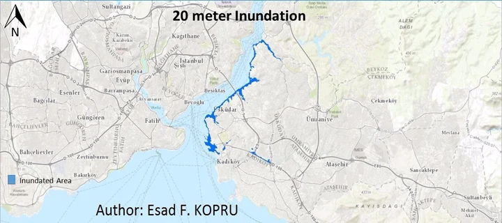
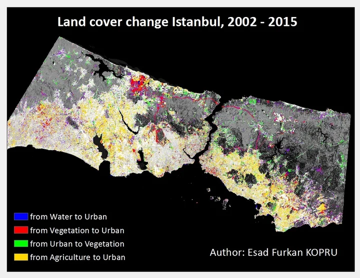
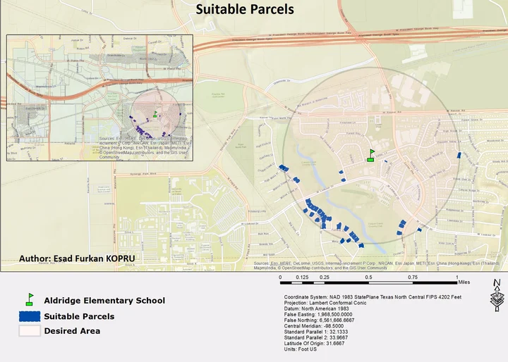

Spatial Analysis
Maps and analyses of access, land cover, terrain, parcels, and routes.
What I did
I mapped income, attendance zones, rental status, code enforcement, and tree locations. I also analyzed viewsheds, sea-level scenarios, land-cover change, and parcel suitability.
Result: The gallery shows a range of spatial-analysis work, including OpenStreetMap data retrieval and shortest- and fastest-path analysis in QGIS.
Tools
- GIS
- QGIS
- Spatial analysis
- Network analysis
- Remote sensing
These screenshots show previous work; the full datasets and methods are not included.
Project gallery
Historical portfolio screenshots. 8 images. Select an image to view it full size.
{kind=link}

{kind=link}

{kind=link}

{kind=link}

{kind=link}

{kind=link}

{kind=link}

{kind=link}

Technical details
Selected historical portfolio examples
Planning questions often need several types of geographic data to be considered together.
- Combine maps and attribute data for a specific question.
- Apply terrain, routing, or change-detection methods as needed.
- Present the results in maps and short summaries.